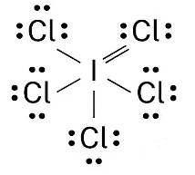
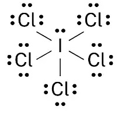
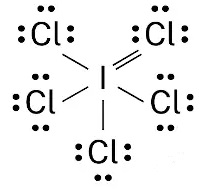
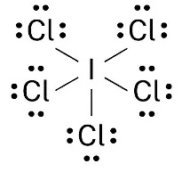

1) Predict the charge that nitrogen will take as an ion.
A) +3
B) +1
C) -3*
D) +2
The charges that elements can form as ions depend on their position in the periodic table and their tendency to gain or lose electrons to achieve a stable electron configuration.
Sodium (Na) tends to lose one electron to achieve a stable electron configuration, forming a +1 ion (Na+). Magnesium (Mg) tends to lose two electrons, forming a +2 ion (Mg2+). Aluminum (Al) also tends to lose three electrons, forming a +3 ion (Al3+). Nitrogen (N) tends to gain three electrons to achieve a stable electron configuration, forming a -3 ion (N3-). Oxygen (O) tends to gain two electrons, forming a -2 ion (O2-). Fluorine (F) tends to gain one electron, forming a -1 ion (F-).
So, the predicted charges for these elements as ions are: Sodium: +1 Magnesium: +2 Aluminum: +3 Nitrogen: -3 Oxygen: -2 Fluorine: -1
2) Determine the density of an item that has a mass of 164.8 g and displaces 13.9 mL of fluid when submersed in a beaker.
A) 11.9 g/mL*
B) 2290 g/mL
C) 0.0843 g/mL
D) 151 g/mL
To determine the density of an item, we can use the formula: Density = mass / volume
Given: Mass = 164.8 g Volume = 13.9 mL *note that the volume of the item is equal to the volume of the fluid it displaces
Now, we can substitute the values into the density formula: Density = 164.8 g / 13.9 mL
Let's perform the calculation: Density ≈ 11.9 g/mL
3) What is the number of sigma and pi bonds in a double bond?
A) 2 sigma bond and 1 pi bond
B) 1 sigma bond and 2 pi bond
C) 1 sigma bond and 1 pi bond*
D) 2 sigma bond and 2 pi bond
4) Identify the longest bond.
A) All bonds are the same length
B) Double covalent bond
C) Triple covalent bond
D) Single covalent bond*
Triple bonds are stronger than double bonds, which are stronger than single bonds.
5) The compound F2 what types of bonds?
A) nonpolar covalent*
B) polar covalent
C) ionic
D) None of the above.
6) Which of the following has the largest first ionization energy; Li, Na, K, or Rb?
A) K
B) Rb
C) Li*
D) Na
Li has the highest first ionization energy. The major trend in first ionization energy is that first ionization energy increases as you go up and to the right on the periodic table.
7) Which of the following shows the best Lewis structure for ICl5?
A) 
B) *
C) 
D) 
I has 7 valence electrons, and Cl has 7 valence electrons. I can get more than an octet because it is below the 2nd period. Chlorine will only get an octet because it is not the central atom. The formal charges need to be as close to zero as possible. is the only structure that contains the correct number of electrons (7 x 6 = 42) where all the formal charges are zero.
8) What are the signs on q (heat) and w (work) for a system that has work done on it by the surroundings, as well as gaining heat from the surroundings?